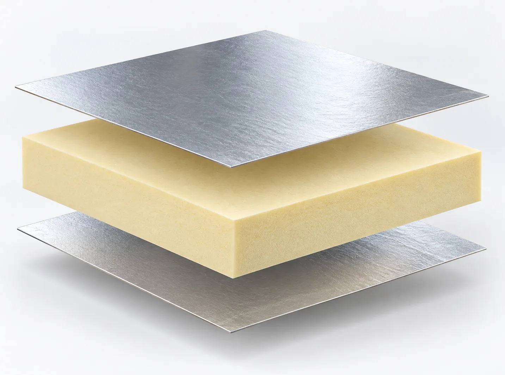
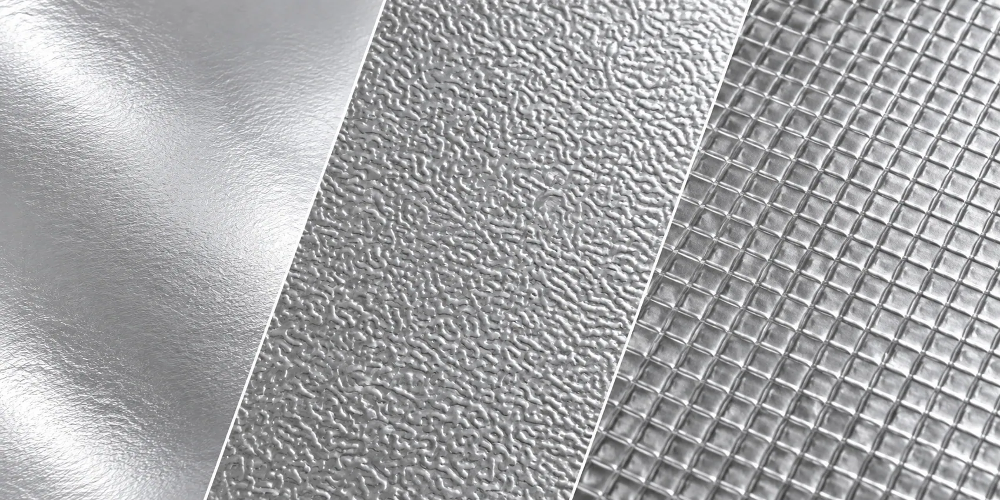
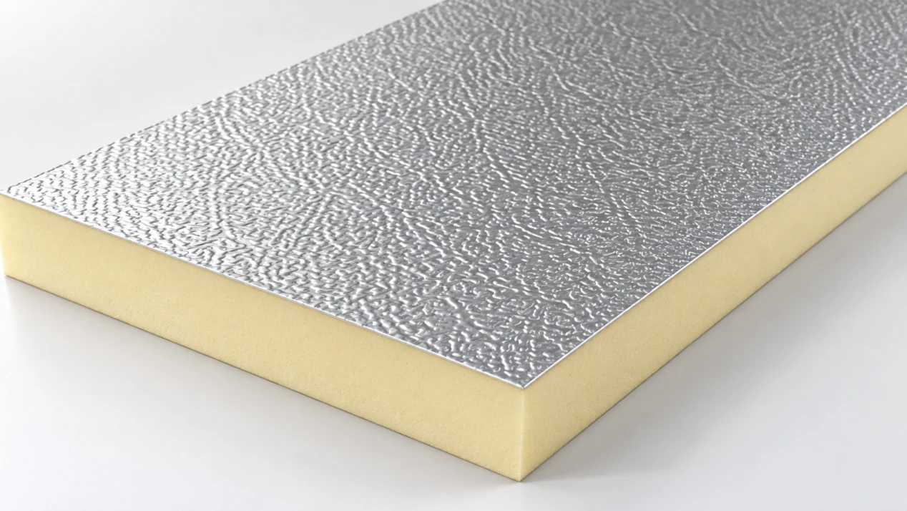
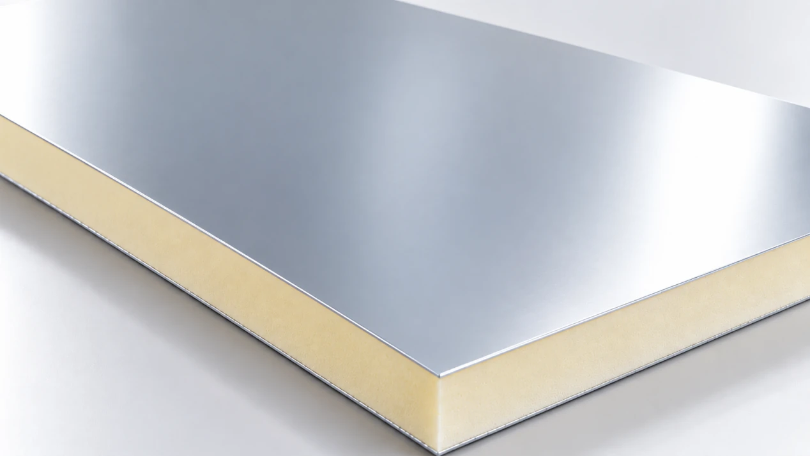
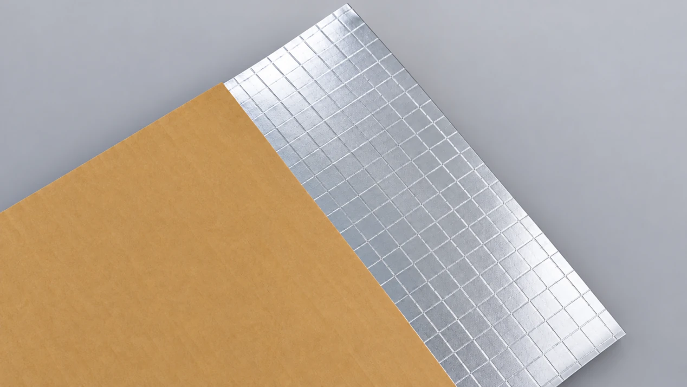
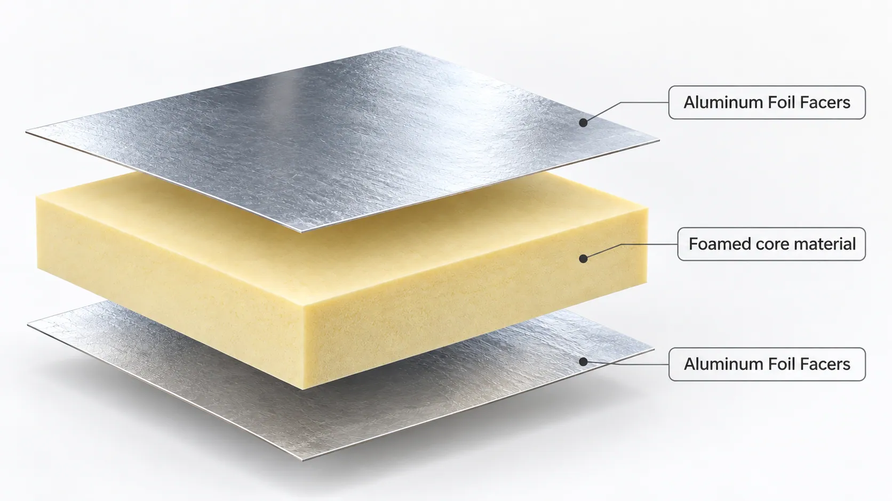
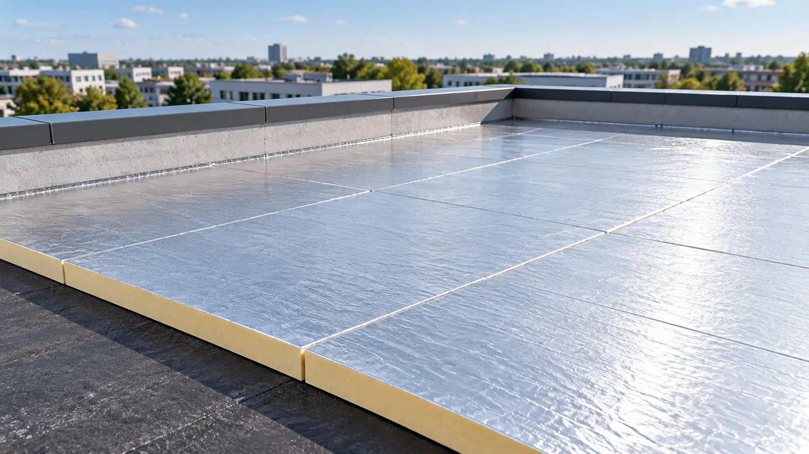
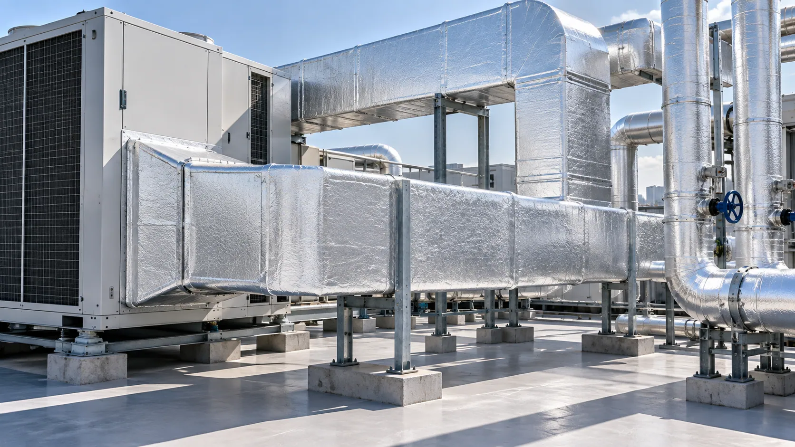

Moisture entry
Pinholes, cracks and damaged joints may allow vapor into moisture-sensitive insulation.
ALUMINUM FOIL FACING SOLUTIONS
Reflect Heat. Resist Moisture. Reinforce Insulation.
Reflective aluminum surfaces with optional fiberglass reinforcement for suitable boards, pipe insulation and industrial applications. Validate moisture control, handling and processing with your insulation core.

MORE THAN A REFLECTIVE SURFACE
Foil integrity and composite compatibility affect both manufacture and the installed insulation system.
Pinholes, cracks and damaged joints may allow vapor into moisture-sensitive insulation.
Unsuitable foil structure or processing can cause pinholes and microcracks during bending and handling.
Unsupported foil may tear, stretch or suffer localized damage during production and installation.
Check adhesive compatibility and bond uniformity to manage delamination and surface defects.

ENGINEERED FOR INSULATION PERFORMANCE
Select aluminum foil facing materials by reinforcement, vapor control and processing requirements. Evaluate the structure with your foam formulation, adhesive or pipe-wrapping process.
A reflective aluminum surface can support thermal radiation management in an appropriately designed assembly.
Compare foil thickness, surface treatment and reinforcement for board production, pipe wrapping or industrial conversion.
FOUR STRUCTURES. MORE POSSIBILITIES.
Compare four regular facing structures by reinforcement and processing requirements.

A textured metallic surface for applications needing a lightweight, flexible reflective facing. Evaluate it for selected pipe coverings or general insulation facings.
Grid reinforcement provides tensile support in two directions for pipe insulation facings and composites needing handling support.

An aluminum foil layer with fiberglass coated veil forms a reinforced facing. Evaluate foam bonding and lamination for suitable PIR/PUR boards and laminated panels.

Combines aluminum foil with woven fiberglass fabric for reinforcement in pipe jackets, industrial coverings and removable insulation covers. Select fabric weight, weave and mechanical properties for the application.
HOW IT WORKS
The facing may be embossed foil alone or a laminate with fiberglass reinforcement. The compatible core supplies the primary thermal insulation function.

A thin metallic layer provides a reflective surface and low vapor permeability; the selected option determines embossing and backing materials.
PIR/PUR foam, mineral wool, glass wool or other compatible insulation must be assessed with the facing for bonding, vapor resistance, mechanical stability and thermal requirements.
TECHNICAL INFORMATION
Confirm the foil type, backing structure and roll requirements against the intended production process.
| Parameter | Specification |
|---|---|
| Product | Aluminum Foil Facers for Thermal Insulation |
| Surface Material | Aluminum Foil / Aluminum Alloy Foil |
| Surface Finish | Embossed / Smooth Metallic, Grade-Dependent |
| Reinforcement Options | Fiberglass Mesh / Coated Veil / Fiberglass Fabric |
| Composite Structure | Grade-Dependent |
| Aluminum Foil Thickness | Customizable |
| Basis Weight | Grade-Dependent |
| Roll Width | Customizable |
| Thermal Reflectivity | Grade & Surface-Dependent |
| Vapor Resistance | Grade & Assembly-Dependent |
| Tensile Strength | Reinforcement-Dependent |
| Adhesion Performance | Requires Application Validation |
| Compatible Insulation | PIR / PUR / Mineral Wool / Glass Wool, Subject to Grade |
| Supply Form | Rolls |
| Customization | Width, Foil Thickness, Embossing, Reinforcement & Lamination |
Technical specifications, foil alloy, composite structure, reinforcement properties, and test results vary by product grade. Contact GRECHO for detailed technical information and applicable test documentation.
APPLICATIONS
Select the facing grade for the core and assembly, with production and installation conditions included in the review.

Evaluate reinforced backing options for foam adhesion, vapor control and surface stability.
Mesh and woven fabric backing offer support for wrapping and installation where flexibility and vapor protection are required.

Compare composite structures with compatible mineral wool, glass wool or other insulation, checking vapor resistance and installation fit.
Evaluate mesh or fabric reinforcement for equipment, pipelines and specialized products exposed to handling and bending.
FROM SAMPLE TO PRODUCTION
Trial the facing with the same insulation material and process planned for production.
Specify core, application, foil thickness, reinforcement, roll dimensions and performance targets.
Compare surface, flexibility, reinforcement and relevant mechanical properties.
Test foam production, adhesive lamination, wrapping or conversion as applicable.
Agree foil type, backing, dimensions, reinforcement and technical requirements.
FAQ
Aluminum foil provides a reflective surface that can reduce radiative heat transfer when used in a suitable assembly, typically with an adjacent air space. Overall insulation performance depends primarily on the insulation core and complete system construction.
A continuous aluminum foil layer provides high resistance to vapor transmission. However, the actual vapor barrier performance of the finished system also depends on foil integrity, seams, joints, adhesive layers, and installation quality.
Mesh is an open grid; fabric has a defined weave density. Reinforcement, flexibility, weight and handling depend on structure, bonding and specifications.
Foil thickness, embossing, roll width, reinforcement and composite structure may be available, subject to manufacturing feasibility.
LET'S FIND YOUR SOLUTION
Discuss suitable samples for your insulation core, production process, reinforcement needs and technical requirements.